直近1週間の更新時系列
10/4 (日)
『踊る大捜査線』藤吉夏鈴＆齊藤なぎさ、青島俊作との共演「人生の伝説」新世代がつなぐ“踊る”イズム シネマトゥデイ
シネマトゥデイ
カルチャー
カルチャー
社会現象を巻き起こした織田裕二主演『踊る大捜査線』シリーズの14年ぶりとなる新作映画『踊る大捜査線 N.E.W. メトロポリスを駆け抜けろ！』（全国公開中）に、新キャストとして参加した藤吉夏鈴（櫻坂46）と齊藤なぎさ。
40分前
今夜「VIVANT」過酷な別班奪還作戦 シンシーの刃が迫る【後半戦初回あらすじ】 シネマトゥデイ
カルチャー
カルチャー
日曜劇場「VIVANT」（TBS系）の第19話（第2シーズン後半戦初回）が、4日よる9時から放送される。
1時間前
10/3 (土)

RecSys 2026の論文を紹介するぜ！ エムスリーテックブログ
エムスリーテックブログ
サイエンス
サイエンス
こんにちは。エンジニアリンググループのAI・機械学習チームに所属している鴨田 です。弊チームでは毎週1時間の技術共有会を実施しており、各自が担当するプロダクトの技術や、最近読んだ論文を紹介しています。9/27〜10/1までRecSys 2026が開催されていたこともあり、同学会の論文読み会となりました。 本ブログでは輪読会で取り上げた論文を紹介します。また、2026年の内容が公開される前の8月末から実施していたため、その期間に実施したRecSys 2025の論文紹介も合わせて掲載します！ RecSysTopページから素材を拝借し組み合わせた画像
11時間前
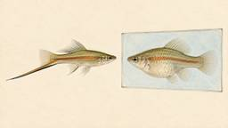
魚のオスの好みは単純、メスの好みは複雑だと判明
発見
ナゾロジーサイエンス
友人に「どんな人がタイプなの」と聞かれて、うまく答えられずに笑ってごまかしたことがある人は少なくないはずです。 自分の好みをはっきり言葉にするのは、案外むずかしいものです。 相手が動物となれば、なおさら本人に聞くことはできません。 そこでエクセター大学の研究チームは、魚に画面の中の「仮想の相手」を選ばせ、それを9世代にわたってくり返すという実験を行いました。 いわば魚たちに、自分だけの「理想の相手」をデザインさせたのです。 では、オスとメスはそれぞれ、どんな相手を作り上げたのでしょうか。 この話題の詳細は2026年9月29日に『Phys.org』にて公開されました。 目次 画面の中で「…
11時間前
パラマウントとワーナー、統合後の新会社名は「スカイダンス」と発表 1 シネマトゥデイ
1 シネマトゥデイ
カルチャー
カルチャー
米パラマウント・スカイダンスとワーナー・ブラザース・ディスカバリー（WBD）の統合による新たな会社名が「スカイダンス（Skydance）」になることが明らかになった。
12時間前
「歯が何度も生え変わる」白亜紀の哺乳類を発見
発見
ナゾロジーサイエンス
子どものころ、ぐらぐらする歯を舌で押しながら、抜ける日を今か今かと待っていた人も多いでしょう。 私たち哺乳類の多くは、一生のうちに歯が1回しか生え替わりません。 歯が乳歯と永久歯の2世代だけというこの性質は、上下の歯がぴったりかみ合うことなど、哺乳類らしい特徴の進化にとってとても大事だと長く考えられてきました。 ところが、恐竜がいた時代(中生代)の哺乳類がどのように歯を生え替えていたのかは、まだよく分かっていません。 そんな中、研究チームは、中国の白亜紀前期(恐竜がいた時代の一時期)にいた哺乳類の、ほぼ全身がそろった化石を報告しました。 記事で紹介されていた画像はこちら（画像1、画像2） で…
13時間前
「虎に翼」脚本・吉田恵里香、“法の日フェスタ”コラボに喜び 作品のメッセージ「法務省の皆様にも届いたのだと」 1 シネマトゥデイ
カルチャー
カルチャー
『劇場版「虎に翼」』と「法の日フェスタin赤れんが2026」のイベントコラボが3日、法務省赤レンガ棟で実現し、劇場版のメガホンを取った梛川善郎監督と脚本を担当した吉田恵里香がトークセッションに出席、作品への思いを語った。
14時間前
『ジュラシック・ワールド／復活の大地』続編、ギャレス・エドワーズの後任は『炎の王国』監督か 1 シネマトゥデイ
カルチャー
カルチャー
米ユニバーサルが、映画『ジュラシック・ワールド／復活の大地』（2025）の続編の監督として、2018年公開の『ジュラシック・ワールド／炎の王国』を手掛けた、Ｊ・Ａ・バヨナを筆頭候補に挙げているとTheWrapほか各メディアが報じた。
17時間前
うつ病予防になるのは「恋人」or「友達」どっち？意外な結果が判明 2 ナゾロジー
発見
サイエンス
世間では一般に、恋愛が人生を豊かにするものと考えられがちです。 ドラマや映画でも「あぁ、恋人がいれば幸せな人生だろうに…」なんてメッセージがしばしば強調されます。 しかし米ミシガン州立大学（MSU）の最新研究は、こうした考えに一石を投じる結果を示しました。 それによると、恋愛関係はうつ症状を増加させる可能性があるのに対し、真にメンタルヘルスを向上させるのは友情関係であることが支持されたのです。 研究の詳細は2025年2月20日付で学術誌『Journal of Social and Personal Relationships』に掲載されています。 目次 恋人がいれば幸せ？それとも…？心…
20時間前
無料でAWSをローカルでシミュレーションできるエミュレーター「MiniStack」、60以上のAWSサービスを単一ポートで利用可能でマルチアカウント＆マルチリージョン対応、セルフホスト可能 57 GIGAZINE
GIGAZINE
はてブ57
設計・SRE・基盤
AWSを利用するアプリを開発する場合、動作確認のたびにAWS上へS3・DynamoDB・Lambdaなどのリソースを作成すると、環境の構築・削除・利用料金の管理などが必要になります。そこで、AWSのAPIをPC上で再現し、AWS CLIやTerraformなどから60以上のAWSサービスをローカル環境だけで無料で利用できるエミュレーター「MiniStack」を使ってみました。
20時間前
「VIVANT」後半戦、アリはバルカで“留守番”なのか 山中崇「最後まで気が抜けない」 1 シネマトゥデイ
カルチャー
カルチャー
日曜劇場「VIVANT」（TBS系・毎週日曜よる9時～）で、解体した国際テロ組織「テント」の元幹部・アリを演じている山中崇。
20時間前

社会主義の東ドイツで育った高齢者は西ドイツ育ちよりも認知機能が良好との研究結果 53 GIGAZINE
はてブ53
サイエンス
ドイツは第二次世界大戦後、ドイツ民主共和国(東ドイツ)とドイツ連邦共和国(西ドイツ)に分裂しており、1990年に東ドイツが西ドイツに編入される形で再統一されました。新たな研究では、ドイツ再統一前の社会主義時代に東ドイツで生まれ育った高齢者は、西ドイツ育ちの高齢者より認知機能が良好で、精神機能の低下が遅いことがわかりました。
1日前
「VIVANT」後半戦初回のキーパーソンはノコル＆黒須 飯田P、松坂桃李の演技に「ある種の恐怖感」 1 シネマトゥデイ
カルチャー
カルチャー
日曜劇場「VIVANT」（TBS系・毎週日曜よる9時～）が、10月4日放送の第19話より第2シーズン後半戦に突入する。
1日前
「ルパン三世」55周年傑作選、各シリーズの投票数最終第1位を発表 10月3日より放送 2 シネマトゥデイ
カルチャー
カルチャー
1971年のテレビアニメ第1話放送から55周年を迎える「ルパン三世」の記念企画として、ファン投票によって放送エピソードを決定する「ルパン三世傑作選」が、10月3日（深夜）より日本テレビにて毎週土曜深夜に放送される。
1日前
10/2 (金)

無料＆オープンソースのAIコーディングツール「Pi 1.0」が正式リリース、MCP対応や複数のAIモデルを切り替える機能を追加 49 GIGAZINE
はてブ49 · 新しく出た
AI・LLM
機能を必要最小限に絞ったオープンソースのAIコーディングツール「Pi」が、正式版となる「Pi 1.0」を2026年10月1日にリリースしました。Pi 1.0では従来のシンプルな設計を維持しながら、外部ツールと連携するMCPへの標準対応や必要なツールだけを読み込む機能、複数のAIモデルを組み合わせる仕組みなどが追加されています。
2日前
ドトール創業者・鳥羽氏、鈴木敏文氏の「品質の追求は量」を経営の財産に (経営者たちが見た鈴木敏文) 1 日経ビジネス電子版 最新記事
組織・マネジメント・QA · ビジネス・公共
組織・マネジメント・QA / ビジネス・公共
ドトールコーヒー創業者の鳥羽博道氏は1990年代に「コンビニの父」鈴木敏文氏と出会った。鈴木氏の語った「品質の追求は量」という言葉が、自身の経営に大きな影響を与えたと振り返る。
2日前
［連載小説4］内部通報の強化に反発する現場 カリスマ顧問「会社を壊すなよ」 (氷層)
仕組みを掘る
日経ビジネス電子版 最新記事ビジネス・公共 / カルチャー
改正公益通報者保護法の説明会当日、東邦商事本館26階の大会議室には、開始前から重苦しい空気が漂っていた。本社の全部長、主要子会社の管理担当役員、監査、法務、人事、財務。会場には100人近い管理職が集まり、壁際の大型モニターには、オンラインで参加する海外拠点長の名前と映像が並んでいた。資料の表紙には、森村透子が赤字で書き直したタイトルが、そのまま印刷されていた。
2日前
AIの年間予算が半年弱で枯渇、企業を襲う「トークン爆発」 (日経クロステック)
AI・LLM · ビジネス・公共
日経ビジネス電子版 最新記事AI・LLM / ビジネス・公共
「1年分の予算を5カ月半で使い切る」「月の半ばで利用枠が底を突く」――。生成AI（人工知能）の利用拡大に伴い、トークンの消費が当初想定を超えて膨らむ「トークン爆発」の状態となる企業が相次いでいる。その結果、年間予算を超過するケースも出ている。定額料金で契約するAIサービスでも、クレジットの利用枠が枯渇し、高機能モデルなどが一時的に使えなくなる事例もある。本特集の第1回では、複数の企業事例を通じて、トークン爆発が発生した理由や、そのような状態を引き起こす「落とし穴」を解説する。
2日前
世界を震撼させた先端AI「クロード・ミュトス」の正体とは (ビジネスTopics)
AI・LLM · ビジネス・公共
日経ビジネス電子版 最新記事AI・LLM / ビジネス・公共
世界を震撼させた先端AI「クロード・ミュトス」の“衝撃”は、多段階の攻撃ステップを自ら組み立てていく能力にありました。クロード・ミュトスとその公開版のクロード・フェイブル、それらの実力を検証する政府機関について解説します。
2日前
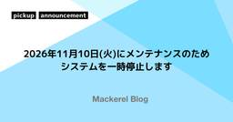
2026年11月10日(火)にメンテナンスのためシステムを一時停止します Mackerel ブログ #mackerelio
いつもMackerelをご利用いただきありがとうございます。 計画的なメンテナンスのため、以下の日程でシステムを一時停止します。ご利用の皆さまにはご迷惑をおかけしますが、ご理解のほどよろしくお願いします。 実施予定日時 2026年11月10日(火) 11:00~14:00 (JST) 上記作業時間の範囲内で一時的にシステムが停止します。 上記は最長の場合です。メンテナンス終了次第システムは再開します。 データベースメンテナンスのため、問題が発生した場合の切り戻しも含めたメンテナンスウィンドウとなります。正常に進行すれば終了予定時間よりも前倒しで終了する見込みです。 実施内容 Mackerelが…
2日前
SICE FES 2026で研究成果を発表！～単眼RGBから「空間を理解する」3D Scene Graph生成技術～
サイエンス
fltech - 富士通研究所の技術ブログサイエンス
SICE FES 2026で研究成果を発表！～単眼RGBから「空間を理解する」3D Scene Graph生成技術～ 鄭 明燮｜フィジカルAI研究所｜2026年9月 はじめに こんにちは、フィジカルAI研究所の鄭です。 2026年9月14日から17日にパシフィコ横浜で開催された「SICE Festival with Annual Conference 2026（SICE FES 2026）」に参加し、単眼RGB画像から3D Scene Graphを生成する研究成果をオーラル発表しました。本記事では、会場の様子、発表内容の概要、評価で得られた結果、さらに会場で印象に残った研究を紹介します。
2日前
Kubernetesの「境界」と「粒度」を引き直す 〜社内プラットフォームの設計判断〜 49 RAKUS Developers Blog | ラクス エンジニアブログ
はてブ49 · 設計判断・移行
設計・SRE・基盤
■ 目次 はじめに このブログの概要 対象読者と前提知識 1. なぜ、そうなっていたのか？ オンプレミスという前提 Kubernetes導入で得られたもの 残った4つの課題 「境界」と「粒度」 2. 境界をどう引き直したのか？ Namespaceの割り当て先 Tenant境界の導入 セルフサービスでの環境発行 エコシステムのテナント分離 論理的な境界の積み重ね 3. リソースの粒度をどう変えたのか？ k8sリソースの粒度の問題 マニフェスト抽象化OSSの選定 PlatformAppの記述例 拡張性とガードレールの両立 4. 今後の課題 まとめ
2日前

開発が高速化した先で、QAはどう追随したか — AI支援によるテスト実行ツールキットの構築 1 Sansan Tech Blog
Sansan Tech Blog
数字のインパクト
AI・LLM / 設計・SRE・基盤 / 組織・マネジメント・QA
この記事は、 When Development Got Faster, QA Had to Follow: Building an AI-Assisted Test Execution Toolkit を日本語訳したものです。 はじめに Sansan Global Development Center, Inc.（SGDC）でQAリードを務めるReubenです。私たちのチームは、経理AXサービス「Bill One」のAI自動照合機能における、QAエンジニアリングの大部分を担当しています。本稿では、手作業で実施していたE2Eテストの所要時間をどのように削減したか、そのために何を構築する必要があっ…
2日前

When Development Got Faster, QA Had to Follow: Building an AI-Assisted Test Execution Toolkit Sansan Tech Blog
AI・LLM · 組織・マネジメント・QA
AI・LLM / 組織・マネジメント・QA
Please see the Japanese version here Introduction Hi, I'm Reuben, a QA Lead from Sansan Global Development Center, Inc. (SGDC). Our team handles most of the QA engineering for AI Auto-Matching feature of Bill One, the accounting AX solution. This article is about how we cut the time we spend running…
2日前

「VLC 3.0.24」に多数の脆弱性修正、本体だけで50件超、macOSでは任意コード実行も実証／開発元の仏VideoLAN Projectが明らかに 3窓の杜
はてブ3
セキュリティ
先日リリースされた「VLC media player 3.0.24」では、130件を超える脆弱性が修正されているとのこと。開発元の仏VideoLAN Projectが、その内容を明らかにした。
2日前

JaSST'26 Niigata 参加レポート：基調講演・事例発表でLayerXメンバー4名がお話ししました #JaSST 1 LayerX エンジニアブログ
LayerX エンジニアブログ
組織・マネジメント・QA
組織・マネジメント・QA
こんにちは！LayerX バクラク事業部 QAマネージャーの松山（matsu）です。 2026年9月18日（金）に開催された「JaSST'26 Niigata（ソフトウェアテストシンポジウム 2026 新潟）」で、LayerXのメンバー4名が登壇しました。 今回は実行委員会からお声がけいただき、基調講演と事例発表をすべてLayerXのメンバーで担当させていただきました。また、ゴールドスポンサーとしても協賛し、当日はブースを出展しました。この記事では、当日の登壇資料と会場の様子、参加した感想をまとめます。 協賛の告知記事はこちらです。 tech.layerx.co.jp JaSST'26 Nii…
2日前

Everpure FlashArrayで実現するランサムウェア対策 ── 基幹データベースの不変スナップショット運用 1 ZOZO TECH BLOG
ZOZO TECH BLOG
設計・SRE・基盤 · セキュリティ
設計・SRE・基盤 / セキュリティ
はじめに こんにちは。EC基盤開発本部 SRE部 カート決済SREの遠藤です。 普段はカート決済に関連する機能のリプレイスや保守運用をメインに、ZOZOTOWNのDBREとして活動しています。 近年、ランサムウェア攻撃が世界中で猛威を振るっており、企業のデータ保護は喫緊の課題となっています。特にデータベースは企業活動の根幹を支える重要な資産であり、万が一の攻撃に備えた対策が不可欠です。 本記事では、Everpure社（旧Pure Storage社）のストレージ製品「FlashArray」を活用したランサムウェア対策をご紹介します。対象はZOZOTOWNの基幹データベースであるMicrosoft…
2日前
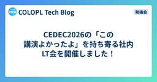
CEDEC2026の「この講演よかったよ」を持ち寄る社内LT会を開催しました！ 1
COLOPL Tech Blog
こんにちは、エンジニアの中途採用と技術広報を担当しているT.Aです。 7月に開催された CEDEC2026 に、コロプラからも多くのエンジニアが参加しました。8月31日には参加したメンバーが集まり、「CEDEC参加者による この講演よかったよLT会」を開催しました。クライアントエンジニアとサーバーサイドエンジニアあわせて6名が登壇し、おすすめの講演や現地参加ならではの魅力を紹介しました。 そもそもCEDECとは CEDECは日本国内で最大規模のゲーム開発者向けカンファレンスです。今年はパシフィコ横浜ノースで7月22日から24日にかけて、現地とオンラインのハイブリッド形式で開催されました。 クラ…
2日前
「Edge」の「IE モード」は少なくとも2029年末までサポート ～Microsoftが改めて周知／早めの移行計画を 14窓の杜
はてブ14 · 設計判断・移行
デスクトップ向け「Microsoft Edge」に搭載されている「IE モード」は、少なくとも2029年末までサポートされるとのこと。米Microsoftが9月16日（現地時間）、「Microsoft 365 管理センター」のメッセージセンターで改めて周知した（MC1473151）。「IE モード」への依存を残している組織に対し、移行計画を早めに立てるよう呼びかけている。
2日前
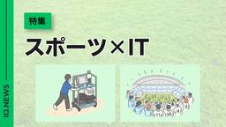
時速290kmの通信に挑む。スポーツの現場がIT技術を鍛える理由 IIJ Engineers Blog
スポーツはITと無縁ではありません。 レーシングカーから途切れず映像を送信するローカル5G、数万人が集まるスタジアムを支える衛星ブロードバンド、ファンの応援を価...
2日前

ここ1,2年で大きく変わった！ デザインのワークフローにAIを活用したやり方がよく分かる解説書 -AIを味方にする デザインワークフロー実践ガイド 3 コリス
コリス
はてブ3
AI・LLM / フロントエンド・デザイン
※本ページは、アフィリエイト広告を利用しています。 AIが当たり前になりつつある現在、デザインのワークフローも劇的な変化をし始めています。エディタをはじめ、AdobeやFigmaなどにもAIが採用され
2日前
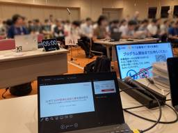
JANOG58 Lightning talk初登壇記～3GPP標準化文書を要約させたら突然外国語が出てきた話～ ENGINEERING BLOG ドコモ開発者ブログ
こんにちは、NTTドコモ 6Gテック部の野﨑航平です。 私は普段、3GPP（携帯電話の国際標準を決める団体）の標準化会合に参加しています。 そんな私が2026年7月、JANOG58にてLightning Talk（以下、LT）に初めて登壇しました。 Lightning Talkとは、5分程度の短い持ち時間で行う発表形式のことです。 通常の講演より気軽に応募できる一方で、「短い時間で何を伝えるか」に工夫が必要な、少し独特な発表形式でもあります。 本記事では、発表内容とLT初登壇の体験をご紹介します。 【この記事でわかること】 JANOG58「AI showcase LT」の特徴 長文をLLMに読…
2日前
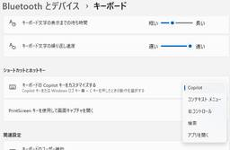
［Copilot］キーに右［Ctrl］と［Menu］キーの動作が追加。何が便利か試してみた 2窓の杜
動かしてみた
AI・LLM
2026年9月のプレビューパッチにより、［Copilot］キーの機能変更に、［右コントロール］と［コンテキスト メニュー］が追加された。
2日前

原因不明のメモリ高騰を追う！GCEの「見掛け上のメモリ増加」解明による50%コスト削減 [DeNA インフラ SRE] 1 Blog on DeNA Engineering
Blog on DeNA Engineering
数字のインパクト
設計・SRE・基盤
はじめに こんにちは。IT基盤部第二グループの若松です。普段は、ゲームプラットフォームにおけるインフラの安定稼働とコスト最適化に日々取り組んでいます。 私たちのチームでは、GCE (Google Compute Engine) を活用したインフラ運用を行っています。GCE のインスタンスを使用する上で、コスト最適化の観点でインスタンススペックの適正化が重要となります。その中 …
2日前

Java 27：オブジェクトヘッダが 8 バイトになる（JEP 534）  フューチャー技術ブログ
フューチャー技術ブログ
Java 27 で JEP 534 により Compact Object Headers がデフォルトで有効になり、オブジェクトヘッダが 12 バイトから 8 バイトに縮みました。ヘッダの中身、小さくなるオブジェクトとならないオブジェクト、ヒープ使用量の実測、移行時に確かめることを整理します。
2日前
10/1 (木)

IIJの技術動画チャンネル「IIJ Techチャンネル」をリニューアル IIJ Engineers Blog
IIJがYouTubeでお送りしているエンジニア向け技術動画「IIJ Techチャンネル」が生まれ変わりました。 新「IIJ Techチャンネル」 https:...
3日前

ファミリーデーで、インターネットの仕組み講座を体験しました
2 IIJ Engineers Blog
仕組みを掘る
8月21日、IIJグループファミリーデーが開催されました。今年初のプログラムとして、小学生以上でも楽しめそうな「インターネットの仕組み講座」が行われました。これ...
3日前
「Oracle JDK 21」は無償の「NFTC」ライセンスの対象外に、10月「CPU」以降で／「Oracle JDK」を無償で商用運用したいなら「Oracle JDK 25」への移行を 18窓の杜
はてブ18 · 設計判断・移行
米Oracleが提供している「Oracle JDK 21」のライセンスが、10月より変更される予定。10月20日に予定されているセキュリティアップデート「Critical Patch Update」（CPU）以降、「Oracle JDK 21」のアップデートは無償の「Oracle No-Fee Terms and Conditions」（NFTC）ではなく、「Java SE OTN」ライセンスで提供される。
3日前

HotCell README: 信頼できない入力の処理を別コンテナに隔離するgem（翻訳） 9 TechRacho
はてブ9
設計・SRE・基盤
概要 MITライセンスに基づいて翻訳・公開いたします。 英語記事: hotcell/README.md at
3日前
三菱商事、AI活用と「考える力」を両立 誤情報と格闘させる新人向け法務研修 (攻めの法務) 1 日経ビジネス電子版 最新記事
AI・LLM · ビジネス・公共
AI・LLM / ビジネス・公共
三菱商事が新人向けの法務研修であえて人工知能（AI）の利用を認めた。狙いはAIに依存して考える力を失うという最悪の事態を防ぐことで、新人を鍛錬する仕組みを巧みに盛り込んだ。その試行錯誤は、業種を問わずAI時代の人材育成を考える上で示唆に富む。
3日前

RubyKaigi 2026 follow upレポート —— SmartHRから3名が登壇し、ブースも出展！  SmartHR Tech Blog
SmartHR Tech Blog
こんにちは！プロダクトエンジニアのitojumです。 SmartHRは、2026年9月5日に東京都港区三田の株式会社IVRyで開催されたRubyKaigi 2026 follow upに協賛し、SmartHRのRubyKaigi 2026登壇者による発表のその後を報告し、スポンサーLT・ブース出展を行いました！ この記事では、イベントの模様と登壇内容をレポートします。 RubyKaigi 2026 follow upとは RubyKaigi 2026 follow upは、RubyKaigi 2026で「今後はこうしていこうと思っています」と言っていた人に、その「今後」を伺うイベントです。登壇…
3日前

【新卒エンジニア研修 Vol.2】限られた時間で、現場に価値を届けるために考えたこと Sansan Tech Blog
組織・マネジメント・QA
組織・マネジメント・QA
はじめに こんにちは！2026年4月にSansan株式会社へ新卒で入社し、現在はCTO室でSansan Labsの開発に取り組んでいる芦沢です。新卒エンジニア研修ブログリレー第2弾となる今回は、私たちのチームで取り組んだ、経理AXサービス「Bill One」を扱うBill One事業部マーケティング部（以下、マーケティング部）での業務効率化について紹介します。
3日前
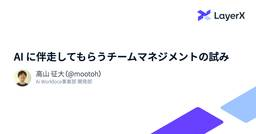
AI に伴走してもらうチームマネジメントの試み 40 LayerX エンジニアブログ
はてブ40
AI・LLM / 組織・マネジメント・QA
LayerX の Ai Workforce (AiW) 事業部の開発部で Engineering Manager をしている mootoh といいます。ちょうど本日、入社して丸1年を迎えました。1年前とは景色がまるで変わっていて、激動のAI時代に生きていることを実感しますね… ここでは、この半年で取り組んできたことを共有できればと思います。主な内容は以下になります: AI には、判断の自動化というよりは観測範囲の拡張を担ってもらい、コミュニケーションのきっかけをつくってもらう 現場の解像度を上げていくことが課題 [FYI] Ai Workforce 開発部の現在地 この半年とその前とを比べると…
3日前

役割を越え、全員がプロダクト全体に責任を持つ。 Bill Oneの事業を動かす開発組織づくり 1 Sansan Tech Blog
動かしてみた
組織・マネジメント・QA
キャリアは、選択の積み重ねでできています。 どんな経験を経て、なぜSansanを選び、いまどんな挑戦に向き合っているのか。「Sansan 3 Stories」では、これまでの歩みと、実際にSansanで働いて感じたこと、そしてこれからの挑戦を「過去・現在・未来」の3つのストーリーでお届けします。今回は、Webサービスの開発から大規模なプロダクト組織のマネジメントまでを経験し、現在は経理AXサービス「Bill One」の請求書受領領域で開発組織のマネジメントを担う酒井に話を聞きました。 酒井 篤 / Atsushi Sakai Bill One AP プロダクト開発部 副部長複数のベンチャー企業…
3日前
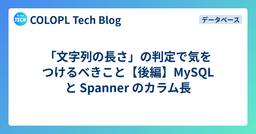
「文字列の長さ」の判定で気をつけるべきこと【後編】MySQL と Spanner のカラム長
設計・SRE・基盤
COLOPL Tech Blog設計・SRE・基盤
こんにちは、エンジニアの 工藤 です。 この記事は前後編の後編です。前回の記事は こちら です。 前編では、 PHP で「文字列の長さ」を数える単位は一つではないこと、そして名前入力のような場面では書記素クラスタ数とバイト数の両方に上限をかける必要があることを説明しました。 blog.colopl.dev 後編では、そうしてチェックした文字列をデータベースで扱う時の話をさせていただければと思います。カラムの桁数として書いたつもりの 20 が実際には何を数えているのかを、代表的なものとして MySQL と Cloud Spanner で見ていきます。
3日前

新卒1年目からKPIオーナー。任せて、支えるエムスリーのPdM育成 エムスリーテックブログ
組織・マネジメント・QA
組織・マネジメント・QA
こんにちは。エンジニアリンググループ プロダクトマネージャーの杉本です。2025年4月に新卒で入社し、デジスマ診療のチームでプロダクトマネジメントを担当しています。デジスマ診療は、診療の予約・問診・決済といった医療機関の業務をDX化し、患者さんの診療体験そのものを改善するサービスです。 シルバーウィークに行った八丈島 エムスリーのPdMは、1年目から課題の発見、開発のリード、KPIのオーナーまで一貫して任せてもらえます。この記事では、任せてもらう側だった私から見た「任せきりにしない環境」を紹介します。
3日前
さくら社員のリアルなCDN活用事例 ～さくらのウェブアクセラレータ 10周年記念～ さくらのナレッジ
さくらのナレッジ
AI・LLM · 設計・SRE・基盤
AI・LLM / 設計・SRE・基盤
はじめに さくらインターネットのCDNサービス「さくらのウェブアクセラレータ」は、2016年10月1日にさくらのクラウドのオプションサービスとして正式提供を開始し、2026年10月で提供開始から10周年を迎えます。月間数 […]
3日前

2026年10月技術イベント予定 Sansan Tech Blog
AI・LLM · 設計・SRE・基盤
AI・LLM / 設計・SRE・基盤
Sansan株式会社では、技術イベントや勉強会の主催・登壇・協賛を行っています。 各イベントの詳細については、以下のリンクからご確認ください。 ※開催状況により、すでに受付を終了している場合がございます。 ※掲載している内容は公開当時の情報です。最新情報は各イベントページをご確認ください。
3日前

長年の悩みがこれで解決！ CSSで機能を組み合わせたときにブラウザがサポートしているか検出できる新機能「@supports named-feature()」 14 コリス
はてブ14 · 新しく出た
フロントエンド・デザイン
CSSの@supportsはブラウザがその機能をサポートしているか検出するのに便利ですが、単独の機能しか検出ができません。 たとえば、gapは現在はflexboxでサポートされていますが、当初はCSS
3日前
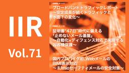
トラフィック変化、証明書47日問題、BIMI対応を解説（IIR Vol.71） IIJ Engineers Blog
IIJは2026年9月30日に技術レポート「Internet Infrastructure Review（IIR）」Vol.71を公開しました。今号では、ブロー...
3日前

2026年9月のイチオシGoogle Cloud・Google Workspaceアップデート
設計・SRE・基盤
G-gen Tech Blog設計・SRE・基盤
G-gen の杉村です。2026年9月に発表された、Google Cloud や Google Workspace のイチオシアップデートをまとめてご紹介します。記載は全て、記事公開当時のものですのでご留意ください。 はじめに Google Cloud のアップデート Cloud Run services で Agent Platform 機能が使用可能に（Preview） Gemini モデルで Agentic video understanding が Preview 公開 Gemini 3.8 Flash / Gemini 3.8 Flash Cyber が一般公開（GA） Cloud …
3日前
AIに投げつけた暴言、その先に。カスハラ対策と、LLMに見つかった「痛み軸」【生成AIストリーム】 23窓の杜
はてブ23
AI・LLM
こんにちは、しらいはかせです。筆者は普段、AICUという会社で『つくる人をつくる』をビジョンに、企業のAI駆動開発のコンサルティングや教育・メディア技術の研究開発をしています。
3日前
9/30 (水)
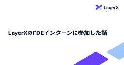
LayerXのFDEインターンに参加した話 19 LayerX エンジニアブログ
はてブ19
※本記事は、2026年7月までLayerXのAi Workforce事業部でFDEインターンとして活躍してくれたakatuki（あかつき）さんによる執筆です。本人のインターン期間終了に伴い、LayerX の maruchiho（まるちほ）が代理で投稿いたします。 はじめに こんにちは、名古屋工業大学 3年の山本賢人（あかつき）というものです。2026年5月〜7月の3ヶ月間、株式会社LayerX Ai Workforce事業 FDE部にてインターンに参加していました。こちらは、その際に取り組んだこと、感想をまとめた記事になります。 業務内容・取り組んだタスクの概要 今回所属していたFDE部では、…
3日前

はてなのポッドキャスト Backyard Hatena #57 - Whyはてなパークス！ その実態に迫る（id:chris4403） #byhatena 23 Hatena Developer Blog
はてブ23
組織・マネジメント・QA
はてな「技術グループ」によるポッドキャスト「Backyard Hatena」を更新。今回のゲストは、社長の id:chris4403 です。創業25周年を迎えた節目にリリースされた新サービス「はてなパークス」について、サービスの立ち上げから関わっている chris さんにお話を伺いました。
4日前
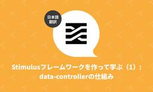
Stimulusフレームワークを作って学ぶ（1）: data-controllerの仕組み（翻訳） 1 TechRacho
仕組みを掘る
フロントエンド・デザイン
概要 元サイトの許諾を得て翻訳・公開いたします。 英語記事: Recreating Stimulus: how
4日前
The 10 Minute Test Plan Generate. Claudeと社内ナレッジでテスト計画の叩き台を10分で生成する仕組み 26 LayerX エンジニアブログ
はてブ26 · 仕組みを掘る · 数字のインパクト
AI・LLM / 組織・マネジメント・QA
こんにちは、LayerXバクラク事業部QA部のコヤマンです。 以前投稿したこちらの記事でご紹介した品質基準活用の取り組みの続きです。 品質の言語化のススメー早期テストの原則をClaude Code Agent Skillsで実現する試み - LayerX エンジニアブログ 「常に最新の仕様と品質基準＋QAのノウハウを踏まえてリスクベースドなテスト計画の叩き台をシュッと生成する仕組み」を構築したお話です。 なぜこの仕組みを作ったのか 新規プロダクトや大きめの新機能開発や大規模改修などにおいて、ゼロからテスト計画を立てることは一定の時間と労力がかかります。フェーズに応じたテストピラミッド（自動テス…
4日前
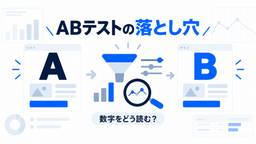
この数字、成果にできますか? ABテストの落とし穴を公開データで確かめる全5問 1 エムスリーテックブログ
AI・LLM · 組織・マネジメント・QA
AI・LLM / 組織・マネジメント・QA
こんにちは。AI・機械学習チームの高田です。 施策の効果検証では、発生頻度の低いイベントをKPIに置くことがあります。母数が小さいぶん、集計定義のちょっとした違いで数字が動きやすくなります。「test群が勝っています」と報告を受けたとき、その数字をどこまで信じてよいのか。判断に使う観点を一度整理しておきたいと考えていました。
4日前

第92回 Ruby関西 勉強会レポート SmartHR Tech Blog
こんにちは、ydahです。普段はSmartHRでプロダクトエンジニアとしてR&Dユニットに所属しています。大阪に住んでいてKyobashi.rbの主催や関西Ruby会議09のチーフオーガナイザーを務めました。 2026年9月17日（木）に、第92回 Ruby関西 勉強会が開催されました。SmartHRは本イベントに協賛し、グランフロント大阪タワーAの34階にあるSmartHR大阪オフィスを会場として提供しました。 rubykansai.doorkeeper.jp この記事では、当日の様子をお届けします。 第92回 Ruby関西 勉強会の会場の様子 目次 目次 開催概要 スポンサートーク: Ra…
4日前

NVIDIA Nemotron 3 Nano 30B A3B Base に対する汎用・金融特化SFT ABEJA Tech Blog
ABEJA Tech Blog
数字のインパクト
AI・LLM / セキュリティ / サイエンス
ABEJA でデータサイエンティストをしている藤原です。 弊社は NEDO が進める「ポスト5G情報通信システム基盤強化研究開発事業／データの秘匿性を考慮した効率的なAI学習手法の開発」に参画し、当該事業の実施委託先として採択を受けた一般社団法人AIデータ主権共創機構（CODAS）より委託を受け、中核の一つである「産業特化型LLM」の開発を行っています。当該事業は企業がセキュリティリスクを懸念することなく産業データを安全に利活用できる「プライバシーファーストAI」の確立を目的としたものです。 産業特化型LLMの開発として、直近では NVIDIA Nemotron 3 をベースモデルとして追加学…
4日前

PDCAの罠 〜A/Bテストの使いどころ〜 エムスリーテックブログ
AI・LLM · 設計・SRE・基盤 · 組織・マネジメント・QA
AI・LLM / 設計・SRE・基盤 / 組織・マネジメント・QA
こんにちは。エンジニアリンググループ プロダクト支援チームでプロダクトマネージャーをしている中村です。 業務でAIエージェントを活用するようになり、分析のスピードが圧倒的に上がりました。気になった数字をすぐ別の切り口で分解し、仮説を立てては検証する。以前なら一段で止まっていた深掘りが、何段も進むようになったのです。その結果、A/Bテストの設計から効果検証までが格段に捗るようになりました。 そうして積み重ねた改善は、一つひとつ確実に成果を出し、プロダクトは順当に成長しています。ただ、10xを狙えるステップチェンジには、まだ至っていません。 PDCAで成果が出ているからこそ、無自覚にPDCAを回し…
4日前

Roppongi.rb #46 がSmartHRで開催されました SmartHR Tech Blog
こんにちは！SmartHRでプロダクトエンジニアをしているmatsugenです。 2026年9月10日（木）、SmartHRのオフィスで「Roppongi.rb #46」が開催されました。この記事では、当日の様子や登壇内容をレポートします。 まだまだ暑さの残る9月の夜、平日の仕事終わりにもかかわらず、多くのRubyistの皆さんにお集まりいただきました。 roppongirb.connpass.com 目次 目次 Roppongi.rbとは 参加人数 開幕 スポンサーLT 参加者LT created_atがレコード作成日時じゃなかった件：国枝桂亮さん MIDoRI開発進捗報告 9月号：Tosh…
4日前
Digdag on GKEからManaged Service for Apache Airflowへの移行と監視の紹介
1 ZOZO TECH BLOG
設計判断・移行
設計・SRE・基盤
はじめに こんにちは、MA部のMA基盤開発ブロックの@gachi-muchi-engineerと松岡（@pine0619）です。 MA部では、メール、LINE、プッシュ通知などを配信しています。配信に必要なデータの生成や夜間の集計など、複数のワークフローを運用しています。これまで、これらのワークフローはGKE上に構築したDigdagで実行していました。Digdagの構成や運用については、以下のテックブログで紹介しています。 techblog.zozo.com Digdagは、ワークフローを定義して実行するための便利なツールでした。一方で、近年は開発が活発ではなく、利用中に発生した問題や機能不足…
4日前
個人で育てたAIエージェント設定を、チームの資産にする（APMによるSkill・指示・MCPの配布とマルチエディタ展開） 1LINEヤフー Tech Blog (LY Corporation Tech Blog
AI・LLM · 組織・マネジメント・QA
AI・LLM / 組織・マネジメント・QA
こんにちは、LINEヤフー株式会社の殿山雄大です。普段は社内のGPU/AI基盤の構築・運用を担当しています。本記事では、2026年7月16日（木）に開催した社内ワークショップOrchestration...
4日前

プライベートクラウドにおけるサービス間通信の今、そして「サービス指向クラウド」が作る未来
設計・SRE・基盤
LINEヤフー Tech Blog (LY Corporation Tech Blog設計・SRE・基盤
こんにちは。LINEヤフーで、プライベートクラウドのネットワーク関連サービスを開発している清水です。現代の大規模なWebサービスにおいては、一つのモノリシックなアプリケーションだけで構成されることは少...
4日前

通知配信基盤（メール配信基盤）の開発を振り返る
設計・SRE・基盤
DMM Developers Blog設計・SRE・基盤
はじめに 通知配信基盤構想のはじまり プロダクト要求仕様書（PRD）を作成 アプリケーションアーキテクチャ設計 技術選定 技術スタック一覧 APIの通信形式 データストア メールサーバ 軽量仕様駆動開発により2ヶ月程度で開発を完遂 いざリリース リリースまでを振り返って課題に感じたこと さいごに We are Hiring! はじめに こんにちは。プラットフォーム開発本部第1開発部 アカウントサービスグループ 会員バックエンドチームでチームリーダーをやっている吉川と申します。DMM.comのプラットフォーム開発本部は、認証・認可・会員基盤・決済基盤等、DMMの各サービスで共通利用できる機能のA…
4日前

10年もののiOSアプリの通信層を止めずにKotlin Multiplatformへ移す5ステップ Sansan Tech Blog
フロントエンド・デザイン
フロントエンド・デザイン
はじめに こんにちは。技術本部でモバイルエンジニアをしている松山（@akidon0000）です。 営業AXサービス「Sansan」のiOSアプリでは、Client APIを呼び出す通信層をAlamofireによる手書きの実装から、OpenAPI Generatorで生成したKotlin Multiplatform（KMP）のコードへと移行しています。今回は、その移行の中で得たノウハウを記事にしました。
4日前

さくらのクラウドとTerraformを活用したDIVER OSINT CTFにおけるインフラ基盤 さくらのナレッジ
設計・SRE・基盤
設計・SRE・基盤
はじめに こんにちは。DIVER OSINT CTF インフラチームのy-chanとxryuseixです。DIVER OSINT CTF 2026では、インフラの大部分にパートナーであるさくらインターネットさんの「さくら […]
4日前

「文字列の長さ」の判定で気をつけるべきこと【前編】Unicode と PHP の文字列処理 COLOPL Tech Blog
こんにちは、エンジニアの 工藤 です。 ゲームに限らず、どんなアプリケーションを実装する時もユーザーが「文字入力」する場面はあるかと思います。 だいたいのアプリケーションでは、入力できる文字を絞ったり、文字列の長さに上限を設けたりしていると思います。今回は PHP でそれを正しく行うための方法、そして注意しなければならないポイントについて触れていきます。 本記事は前後編構成です。前編では Unicode と PHP における文字列の扱いを、後編ではその文字列をデータベースに保存する時の注意点を扱います。
4日前

OpenAIの音声エージェント評価ガイドを日本語の小売サポートで試してみた AI Shift Tech Blogのフィード
AI Shift Tech Blogのフィード
動かしてみた
AI・LLM
こんにちは、AI Shift AIチームの大竹です。今回は、OpenAI CookbookのGPT-Live evaluation guideを、日本語の小売サポートに当てはめて試した検証ログです。GPT-Live evaluation guideは、GPT-Liveのような「聞きながら話す」音声エージェントを評価するためのガイドとハーネス一式です。ガイドでは架空の飲食店の予約アシスタントを例に、「Mayaの名前で8月7日、いや6日の19時に2名で」という発話から、訂正後の日付で予約を1件だけ作り、ツールが成功してから確定を伝えられるかを確かめています。評価は、一発話への応答を見る...
4日前

Google SecOps MCP serverとSkillsでアラートをトリアージする
AI・LLM · 設計・SRE・基盤
G-gen Tech BlogAI・LLM / 設計・SRE・基盤
G-gen の武井です。当記事では、Google SecOps MCP server と Skills を組み合わせ、Google SecOps で検知したアラート（ケース）をトリアージする方法について紹介します。 はじめに 前提知識 Google SecOps トリアージと調査エージェント（TIN） Google SecOps MCP server Antigravity CLI Skills 検証の概要 構成 検証の流れ 検証の方針 環境構築 事前準備（IAMと認証） Antigravity CLI のインストール Antigravity CLI のサインイン Google SecOps …
4日前

声が主役の入力へ ─ CRE が AI 音声入力ツールを自作して変わった働き方 1 弁護士ドットコム株式会社 Creators’ blog
作ってみた
AI・LLM
AI時代の入力をもっと速く。WhisperとローカルLLMで、音声認識・文章整形・誤変換補正まで端末内で完結するmacOS音声入力ツール「fujitani-voice」を自作した話
4日前

Java 26：final を本当に final にする準備（JEP 500） フューチャー技術ブログ
Java 26 で入った JEP 500 により、リフレクションで final フィールドを書き換えると警告が出るようになりました。背景の Integrity by Default、警告と例外の違い、Gson・Jackson での挙動、対処方法を整理します。
4日前

詳説 BigQuery の課金モデルの選定と Editions への移行手順 [DeNA インフラ SRE] 1 Blog on DeNA Engineering
設計判断・移行
設計・SRE・基盤
はじめに こんにちは、 IT 本部 IT 基盤部 第三グループの渡邊です。IT 基盤部では、組織横断的にさまざまなサービスのインフラ運用とコスト削減に取り組んでいます。 BigQuery のクエリ費用には、スキャンしたバイト数に課金するオンデマンドと、確保したスロット（BigQuery の計算リソースの単位）の時間に課金する BigQuery Editions（以 …
4日前

Java連載2026：Java 26／27リリース記念ブログ連載 フューチャー技術ブログ
AI・LLM
AI・LLM
Java 27のリリースを記念して、Java 26／27をテーマにしたブログリレーを開催します。AI時代のJavaの立ち位置と、公開スケジュールを紹介します。
4日前
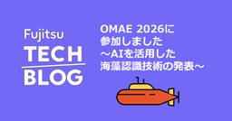
OMAE 2026に参加しました ～AIを活用した海藻認識技術の発表～
AI・LLM
fltech - 富士通研究所の技術ブログAI・LLM
はじめに こんにちは、海洋デジタルツインコアプロジェクトの鈴木です。 2026年6月7日から12日に東京・お台場で開催された国際会議「The 45th International Conference on Ocean, Offshore and Arctic Engineering（OMAE 2026）」に参加し、海藻認識AIに関する研究「Sparse Point-Guided Fusion of Supervised and Self-Supervised Learning Model for Seaweed Segmentation」を発表しました。 本記事では、OMAE 2026の様子…
4日前
9/29 (火)

Railsの鋭い部品シリーズ: ポリモーフィック型は外部キーではない（翻訳） 2 TechRacho
概要 元サイトの許諾を得て翻訳・公開いたします。 英語記事: Rails: The Sharp Parts.
5日前

増え続けるGoのテストに対応するGitHub Actionsのテストシャーディングと高速化 3 ZOZO TECH BLOG
はてブ3 · 数字のインパクト
設計・SRE・基盤
はじめに こんにちは、ECプラットフォーム部の権守です。普段はZOZOTOWNの会員基盤の開発に携わっています。 会員基盤では機能追加やリプレイスを継続しており、それに伴ってテストコードも増え続けています。テストが増えること自体は品質を維持する上で必要ですが、GitHub Actions上のテストにかかる時間も徐々に長くなっていました。具体的には、ワークフロー開始から完了までの実経過時間（以下、wall-clock）は13分前後となることが多い状態でした。 そこで、wall-clockを短縮するとともに、今後のテスト数の増加にも対応できるよう、テストのシャーディングを中心に実行方式を見直しまし…
5日前

新卒2年目の社員が挑んだ、楽楽勤怠へのAIチャットボット導入プロジェクト 12 RAKUS Developers Blog | ラクス エンジニアブログ
はてブ12
AI・LLM
今回は、楽楽勤怠に組み込まれたAIチャットボット機能の開発を担当した、楽楽勤怠開発課の黒田さんに話を聞きました。 黒田さんは新卒2年目。事業部・デザイナー・インフラ担当など多くの関係者を巻き込むこの開発を、ほぼ一人で任されています。 楽楽勤怠とは 楽楽勤怠のAIチャットボットとは何か なぜこの機能を作ったのか 開発の話：工夫した点、難しかった点 実装より大変だった、社内の情報連携 当初試していたRAGの課題と方針転換 回答精度のチューニングと、こだわった速さ 今後の展望 おわりに
5日前

Cloudflare Workers Tech Talks in Fukuokaに参加し、登壇しました！ SmartHR Tech Blog
こんにちは、SmartHRの @udzura です。福岡で好きなうどんは萬田うどんです。 今回、2026年9月10日（木）に福岡で開催された Cloudflare Workers Tech Talks in Fukuoka #2 に参加し、登壇しました。この記事では、イベントの様子と自分の発表内容、それに他の登壇者の発表から学んだことを紹介します。 主催のyusukebeさんから開始のご挨拶 Cloudflare Workers Tech Talks in Fukuokaとは Cloudflare Workers Tech Talks in Fukuokaは、Cloudflare Worker…
5日前

他職種の専門性を開発プロセスにつなぐ —— QAエンジニアとカスタマーサポートの協業で見えた、工程に応じた関わり方 1 SmartHR Tech Blog
組織・マネジメント・QA
組織・マネジメント・QA
QAエンジニアとカスタマーサポートが取り組む、顧客の知見を工程に応じて仕様に活かすための仕組みづくり こんにちは、SmartHR 品質保証本部 レバレッジ推進ユニットのgo-sanです。 前回の記事「開発プロセスに他職種の知見を届ける —— QAエンジニアによる仕組みづくりの現在地」では、カスタマーサポートチーム（以下、SP）が持つ顧客・業務知見をリリース前の品質づくりに活かすため、プロダクト要求仕様書（以下、PRD）のレビューや実装前のフィードバックを試している状況を紹介しました。 当時は、SPならではのレビュー観点を問いかけリストに整理している段階でした。その後、複数の開発案件で試したこと…
5日前

AIインフラとコミュニティについてあれこれ聞いてみた 〜「さくらの夕べ in 松山 with アリスタネットワークス」レポート〜
さくらのナレッジ
AI・LLM · 設計・SRE・基盤
AI・LLM / 設計・SRE・基盤
はじめに 2026年7月15日(水)に「さくらの夕べ in 松山 with アリスタネットワークス」を開催しました。今回のイベントは同時期に愛媛県松山市で開催されたJANOG58ミーティングに併せて実施したもので、JAN […]
5日前

SREコミュニティイベントでLT登壇5連発！ CREが参加して見えてきたこと SmartHR Tech Blog
設計・SRE・基盤
設計・SRE・基盤
こんにちは！ SmartHRのCRE（Customer Reliability Engineering）部 でマネージャーをやっている a-know（井上）です。8月下旬に夏休みを取ったのですが、6日連続で15,000歩くらい歩いた結果、左膝に爆弾を抱えてしまいました。昨年も同じようなことをしたのですが、そのときには問題なかったのですが⋯⋯年々体の衰えを感じずにはいられませんね。 さて、実はこの9月は SRE（Software Reliability Engineering） のコミュニティが異様に盛り上がっていたことに、みなさんは気づいていましたでしょうか？ 私が把握できただけでも、9月は以…
5日前

embeddingベースの推薦システムでA/Bテストを高速に回すための配信基盤REP 20 ZOZO TECH BLOG
はてブ20
AI・LLM
はじめに こんにちは、データシステム部推薦研究ブロックの寺崎（@f6wbl6）です。 ZOZOTOWNでは、ユーザーと商品を同じベクトル空間で表現するembeddingをTwo-Towerモデルで学習しています。このembeddingを複数の推薦施策で共有できるEmbedding基盤を運用しており、過去のテックブログで紹介しました。 techblog.zozo.com このEmbedding基盤を活用することで、新しい推薦施策の立ち上げ時に新たなモデル構築やモデルのためのインフラ整備等をゼロから行う必要がなくなり、立ち上げ期間を大きく短縮できました。この基盤を使った汎用推薦システムの構築事例も…
5日前

チームの記憶を検索可能にしたら、AIにタスクを丸ごと任せられるようになった 2LINEヤフー Tech Blog (LY Corporation Tech Blog
AI・LLM · 組織・マネジメント・QA
AI・LLM / 組織・マネジメント・QA
こんにちは。LINEヤフーのプラットフォーム部門でメトリクスチームに所属している千葉です。普段は、全社のサービスを支える大規模モニタリングプラットフォーム「Yamas」の開発と運用に取り組んでいます。...
5日前

Kafkaアラートの初動調査を支援するAI Alert Watcherの開発（インターンレポート） 1LINEヤフー Tech Blog (LY Corporation Tech Blog
AI・LLM · 設計・SRE・基盤
AI・LLM / 設計・SRE・基盤
はじめにこんにちは。法政大学情報科学部3年の霍 永豪と申します。2026年8月17日〜9月11日の4週間、社内のデータ基盤に使われているKafkaを運用するチームでインターンとして参加し、Grafan...
5日前
AIが作る資料、みんなに配りたいし、見た目も構成も揃えたいし、図もグラフもきれいにしたいし、スライドも作りたい 1 エムスリーテックブログ
AI・LLM
AI・LLM
こんにちは、エムスリーエンジニアリンググループの福林 (@fukubaya) です。 AIエージェントに調査や分析をさせると、成果そのものは十分な質で出てきます。ところが、それを人に配る段になると一手間かかります。ターミナルに流れた結果をそのままSlackに貼っても読んでもらえませんし、Markdownのままでは図表の表現力が足りません。かといってHTMLで出力させると、実行するたびにデザインも文章構成も安定せず、チームの成果物として見たときに揃いません。 そこで、成果物の「見た目」と「構成」をプラグイン側に固定してしまうことにしました。社内のデザインシステムをレポートに適用し、目的別の文書構…
5日前

GKE に Open Cluster Management (OCM) を導入するのにハマったことメモ AI Shift Tech Blogのフィード
設計・SRE・基盤
設計・SRE・基盤
こんにちは、@key60228 です。Kubernetes や Cloud Native の文脈において、AI Workload とともにマルチクラスタ運用の話題もますます増えてきてますよね。KubeCon + CloudNativeCon Japan 2026 でもいくつかセッションがありました。 (前者は「軽率にマルチクラスタにするな」って主旨でしたが)https://www.youtube.com/watch?v=-0gJNQogilQ&list=PLH1zduub3WrE&index=109https://www.youtube.com/watch?v=G...
5日前
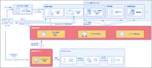
10年以上開発が続くモノリスから、権限管理機能を基盤へ移行するための取り組み 20 freee Developers Hub
はてブ20 · 設計判断・移行
設計・SRE・基盤
はじめまして、権限管理基盤チームのyocchiといいます。 freeeでは、freee人事労務やfreee販売、freee請求書といった様々なプロダクトを提供していますが、これらのプロダクトから共通で利用できるアクセス制御用のシステムとして、「権限管理基盤」とよばれるマイクロサービス類を内製しています。 しかし、freeeのすべてのプロダクトがこの共通基盤を利用できているわけではありません。基盤が誕生する前から開発が続けられていたプロダクトでは、独自の権限管理処理を持っているものもいくつか存在しています。 今回の記事では、少し長くなりますが、私たち権限管理基盤チームが直近で取り組んだ、free…
5日前
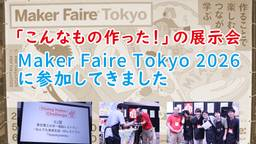
「こんなもの作った！」の展示会 Maker Faire Tokyo 2026に参加してきました
作ってみた
IIJ Engineers Blog自分が欲しいものや、面白いと思うものを、自らの手で作る。さらに、その作品や作り方をほかの人と共有する。こうした活動に取り組む人たちを「メイカー（Maker）」と...
5日前

Switching ECS deployment types with nearly zero disruption
設計・SRE・基盤
CyberAgent Developers Blog | サイバーエージェント デベロッパーズブログ設計・SRE・基盤
Safe ECS controller migration with zero downtime: run parallel services, Terraform-owned config, and a staged cutover behind the same load balancer.
5日前